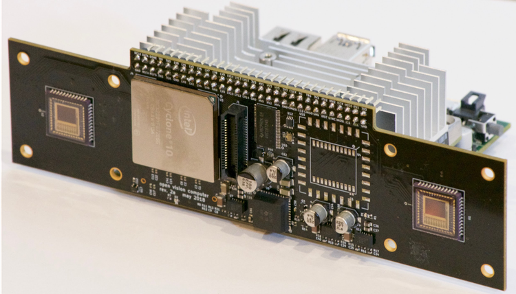

The Open Vision Computer
The Open Vision Computer (OVC) was designed to support high speed, vision guided autonomous drone flight. In particular our aim was to develop a system that would be suitable for relatively small-scale flying platforms where size, weight, power consumption and computational performance were all important considerations. Our recently submitted manuscript describes the primary features of our OVC system and explains how they are used to support fully autonomous indoor and outdoor exploration and navigation operations on our Falcon 250 quadrotor platform. This manuscript can be found on arXiv.
OVC1

OVC2

OVC3

Software Resources
We have made many of our software repositories publicly available, and have been successfully used on our OVC platforms. We currently have many vision related tools such as stereo camera rectification, GPU accelerated depth estimation, deep learning based object segmentation etc.
Hardware Resources
All resources required to manufacture and assemble these devices is publicly available on our GitHub repository.
Media
The Open Vision Computer
A brief walkthrough video of the features of the OVC, and it’s application to
unmanned aerial vehicles such as the Fast Lightweight Autonomy Falcon 250.

DARPA Fast Lightweight Autonomy
Project overview of the DARPA Fast Lightweight Autonomy programme, featuring our
unmanned aerial vehicle platform powered by the Open Vision Computer.

Falcon 250 with the OVC